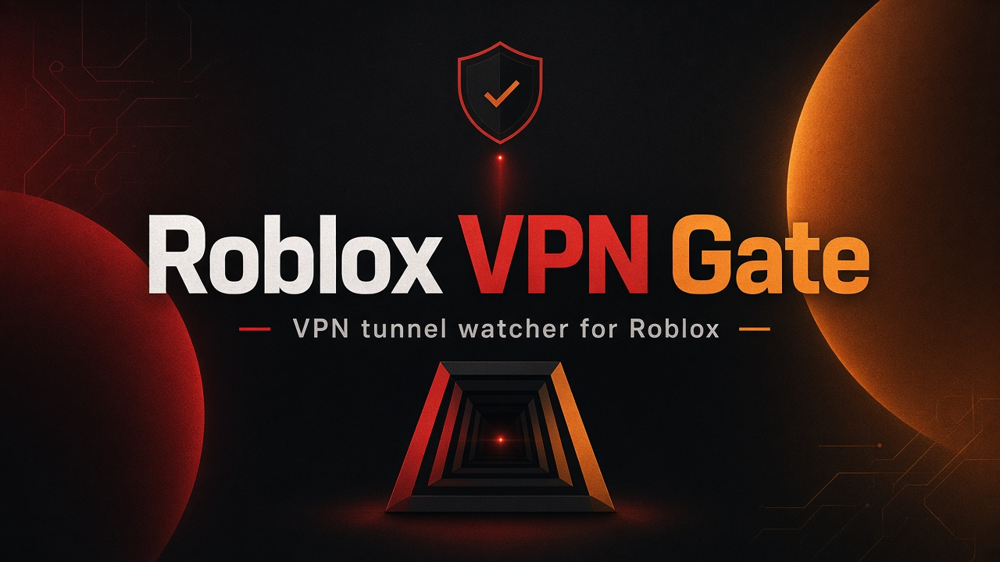
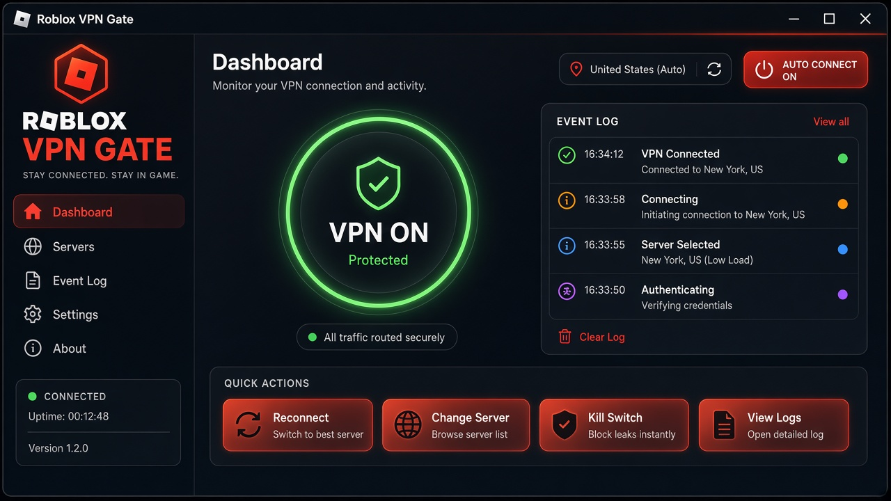
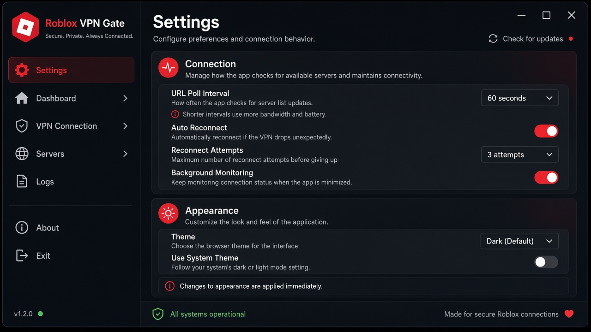

Windows · VPN tunnel watcher · HTML UI
Roblox VPN Gate
Включаешь VPN — открывается Roblox. Выключаешь — вкладка сразу закрывается. Следит за туннелем, а не за процессом клиента.

01
Детект туннеля
Опрашивает VPN-адаптеры и RAS. Открытый клиент без туннеля — не считается.
02
Открытие вкладки
При переходе offline → online открывает Chrome/Edge на нужном URL.
03
Мгновенное закрытие
Как только туннель падает — вкладка закрывается без ручных кликов.
Интерфейс
Тёмный HTML UI с темами, журналом событий и настройками под ваш VPN.


Установка за минуту
- Скачайте
RobloxVPNGate-Setup-1.0.1.exeиз Releases - Установите и запустите приложение
- Включите мониторинг и подключите VPN как обычно